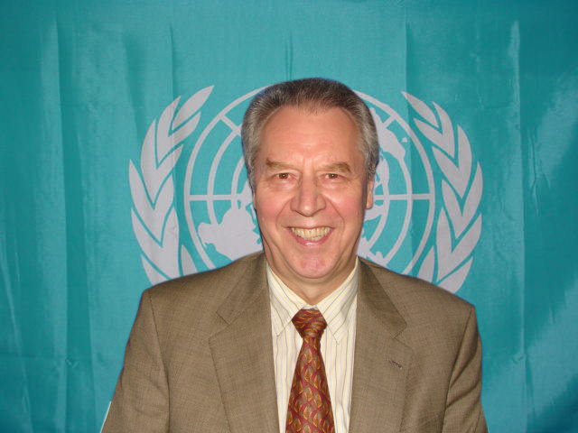

Technology & Mass Media: Is 'Global Culture' a Culture at All?
Over the last few decades, the world has moved into a technological age. Technology is used by all of us, every day in some form or another, to help us function and advance our lives. But is too much technology a bad thing? It is undeniable that technology has vastly improved the ways in which we live our lives — making our daily activities run faster and more efficiently. However, have we become so dependent on technology that we cannot run our lives without it?
Undeniably, technology has created a culture that is almost dependent on it, but has in other ways has contributed vastly to human affairs. However, have we created a “global culture” of technology? The idea of a global culture is the way in which through globalization, economies and societies have become inter-connected through a global network of communication, transportation and trade. Through new technologies, such as the Internet, it has become harder and harder to stop cultures from bleeding into one another. However, we must ask ourselves these questions: Is a “global culture” such a good thing? Has technology created a positive or negative “global culture”? Is “global culture” a culture at all?
—Mariam Ascan and Imran Moledina
Mitchell Stephens is the author of A History of News, an extended history of journalism that has been translated into four languages and was a New York Times "Notable Book of the Year." (A new edition was published by Oxford University Press in fall 2006.) His well reviewed book, the rise of the image the fall of the word, a historical analysis of our current communications revolution, was published in 1998 and is available from Oxford University Press. Professor Stephens is also the author of Broadcast News (now in its fourth edition), the most widely used radio and television news textbook, and the co-author of Writing and Reporting the News (a third edition of this book was just published by Oxford).
He is a long-time professor of Journalism at New York University and has served three terms as chair of the Department of Journalism there. In 2009 he was a fellow at the Harvard’s Shorenstein Center, working on a project on the future of journalism.
Prof. Stephens’ current projects include a book on the future of journalism education for Oxford University Press and a book on the future of journalism for Columbia University Press.
Over the years, Professor Stephens has written numerous articles on media issues and aspects of contemporary thought for publications such as the New York Times, the Los Angeles Times, the Washington Post and the Columbia Journalism Review. He was one of five editors of the book Covering Catastrophe: Broadcast Journalists Report September 11.
In 2001, Professor Stephens completed a trip around the world, during which he reported on globalization for the public radio program "Marketplace" and the webzine Feed and wrote essays on travel for LonelyPlanet.com. His commentaries have aired on NPR's "On the Media." He has been history consultant to the Newseum.
Professor Stephens has been involved in a number of media development projects overseas since 1993 — including two large State Department University-Partnership Grants, which he directed, with Rostov State University in Russia. Professor Stephens has also taught or organized exchanges in Ghana and India. He was director of the Russian-American Journalism Institute in Rostov.
In 2006, Professor Stephens won a grant from the Carnegie-Knight Initiative on the Future of Journalism Education toward research on new models of journalism education.
—Mitchell Stephens, Professor of Journalism (Carter Institute – NYU)
Sergei Zelenev is an international expert on social policy. For almost three decades he worked for the United Nations, both at the Headquarters in New York and in the field, in Africa and in the Caribbean. His international career with UN Secretariat involved a range of functions that he performed through the years, including research and policy analysis of various socio-economic issues; provision of substantive support to the intergovernmental policy dialogue of the member states at the United Nations and facilitating international cooperation in the area of social development; strengthening the capacity of the member states in social policy formulation and implementation, as well as organization of various international conferences and expert group meetings. During his UN career he assumed various managerial duties, including such positions as Director of the UN International Research and Training Institute for the Advancement of Women (UN-INSTRAW) and the Head of the Social Integration Branch in the United Nations Department of Economic and Social Affairs (UN/DESA). He participated in numerous international events, symposia and conferences, making key-note presentations on social issues of international significance. He has written widely in the areas of social inclusion, economic development, ageing, youth and family and directed numerous UN/DESA studies on key policy issues. The most recent publication where he is both editor and coauthor is the book released world-wide at the end of 2010 by Palgrave Macmillan called “Intergenerational Solidarity: Strengthening Economic and Social Ties”.
—Sergei Zelenev
Undeniably, technology has created a culture that is almost dependent on it, but has in other ways has contributed vastly to human affairs. However, have we created a “global culture” of technology? The idea of a global culture is the way in which through globalization, economies and societies have become inter-connected through a global network of communication, transportation and trade. Through new technologies, such as the Internet, it has become harder and harder to stop cultures from bleeding into one another. However, we must ask ourselves these questions: Is a “global culture” such a good thing? Has technology created a positive or negative “global culture”? Is “global culture” a culture at all?
—Mariam Ascan and Imran Moledina
He is a long-time professor of Journalism at New York University and has served three terms as chair of the Department of Journalism there. In 2009 he was a fellow at the Harvard’s Shorenstein Center, working on a project on the future of journalism.
Prof. Stephens’ current projects include a book on the future of journalism education for Oxford University Press and a book on the future of journalism for Columbia University Press.
Over the years, Professor Stephens has written numerous articles on media issues and aspects of contemporary thought for publications such as the New York Times, the Los Angeles Times, the Washington Post and the Columbia Journalism Review. He was one of five editors of the book Covering Catastrophe: Broadcast Journalists Report September 11.
In 2001, Professor Stephens completed a trip around the world, during which he reported on globalization for the public radio program "Marketplace" and the webzine Feed and wrote essays on travel for LonelyPlanet.com. His commentaries have aired on NPR's "On the Media." He has been history consultant to the Newseum.
Professor Stephens has been involved in a number of media development projects overseas since 1993 — including two large State Department University-Partnership Grants, which he directed, with Rostov State University in Russia. Professor Stephens has also taught or organized exchanges in Ghana and India. He was director of the Russian-American Journalism Institute in Rostov.
In 2006, Professor Stephens won a grant from the Carnegie-Knight Initiative on the Future of Journalism Education toward research on new models of journalism education.
—Mitchell Stephens, Professor of Journalism (Carter Institute – NYU)
|  |
—Sergei Zelenev